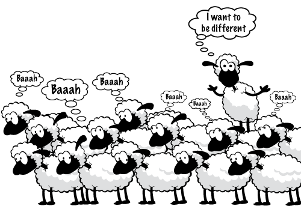

Captured by Normalcy

A pretty common question that we come across these days. The question still remains that "Are Normal and Abnormal, just the states of mind or not?" I always feel many people at least 50% go to bed, thinking, "Were my actions too normal?" OR "Was I too normal today?". According to the questions, the two meanings of normal can be interpreted. The first being normal is living out of visible discomfort; by viewable, I mean visible to the outside world. And the second meaning is feeling satisfied with oneself. The society decides the parameter for classifying everything or everyone as general. The moment we step up or urge to step up the deciding line, we are judged for who we are or trying something new. But aren't we the ones constituting the society. Don't we all set boundaries for ourselves and then blame the community for doing it. Often, the situation is that a person blames the organization for his or her underperformance whereas, as he or she wasn't ready to accept the spotlight by leaving THE COMFORT ZONE. 'What happens to a person who isn't ready to change according to the expectations of the world around us'? People submerge in the dark pit created by the critics. But what if we change the world, who's opinions bother us, and who inflicts these changing authorities.
For instance, say Anne Frank would have changed the people affecting her opinions? or Mr. Narendra Modi would have left people's opinions to bother him? Then these instances would have proven that Anne Frank wouldn't be a troubled kid at school, and Mr. Modi wouldn't be the Prime Minister of worlds one of the greatest economies and democracies.
But there are times when we tend to modify ourselves to fit in the definition of normal due to societal pressure. For instance, even Brutus stabbed Ceasar to be called normal by the rest of the people. For example, A small girl is taught how to play with dolls or houses but not bey-blades or cars as dolls and houses are standard.
The definition of normal varies from person to person depending on age, occupation, etc. We see that wearing branded clothes seems reasonable to a rich person, but for a poor person wearing them would not be average. Also, sometimes the definition of regular changes from place to place like eating a typical food item might be usual in other countries or states but not in your home (beef). This definition of ordinary created by society makes us
aware of our shortcomings in a few areas and our exceptional performance in others.
CASE1: A man in the age group (27-38) is busy with startup works and is a complete gentleman, taking care of his child
and his wife but is not financially independent for a few months. Society judges him to be an' irresponsible
person' as he left his job.
CASE2: A girl coming from a conservative background decides not to stay as a homemaker and start working in the
corporate sector is judged for being 'too bold' by society.
The stones and ridges;
Bullets and storms
Stay still in the noman's land
No one has a dare
No one does care
Look in the mirror within you :
Find the ground of emotions and feelings
as Stones and Bullets
Time is changing
So are the bullets ;
Some are used to kill the enemy
And some for you!
Coming to a conclusion; most of the times normal societal isn't even acknowledged as
what matters is our confidence and not society's opinions.
By - SAKSHI NIKAM